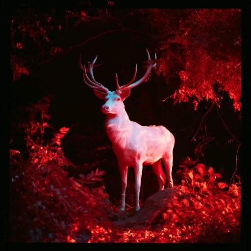

Selection Lab
The institutional and research layer.
This is the company-facing layer: AI reliability, institutional knowledge, research, validation, partnerships, and systems work.

Selection Lab Book a callAbout Selection Lab
Selection Lab builds Human Knowledge Infrastructure for the AI era.
For more than two decades, Tatiana Ilina's work has focused on a fundamental problem: how do we preserve not only information, but the human context that gives information meaning? Her background spans documentary investigation, visual journalism, education, institutional analysis, editorial systems, and digital workflow architecture.
Tatiana’s documentary work has been exhibited and published internationally. In the United States, its value and national importance were recognized through the granting of a National Interest Waiver.
At the foundation of this work is a 22-year longitudinal documentary archive — a large-scale record of people, environments, institutions, decisions, and social change observed across time. Today, Selection Lab is developing Soul Engine™ as human-grounded AI and institutional intelligence infrastructure designed to help organizations reconstruct how knowledge and decisions evolved, preserve their provenance and context, and use AI without losing the human reasoning behind the record.
One ecosystem
The layers
Photography, documentary work, AI architecture, institutional systems, and experimental work are distinct functions of one long-term methodology.
The institutional and research layer.
This is the company-facing layer: AI reliability, institutional knowledge, research, validation, partnerships, and systems work.
The infrastructure layer.
This is the architecture being developed to preserve provenance, chronology, relationships, institutional memory, and human context across complex knowledge systems.
The source and research foundation.
The 22-year longitudinal Human Archive provides real-world human material, continuity across time, documentary evidence, and the first validation environment for the system.
The experimental layer.
This is where AI, culture, visual language, identity, and unconventional ideas can be explored more freely.
The creative and commercial layer.
Photography, film, creative direction, founder identity, visual transformation, documentary production, campaigns, and experimental image-making.
The connective idea.
It represents the effort to identify what is genuinely human and meaningful inside large amounts of information, systems, behavior, and technological noise.
The method
Selection Lab proves.
Soul Engine™ builds.
Unfabled AI provokes imagination.
Unfabled Art transforms and creates.
The Human Archive grounds it all in lived human experience.
The principle
The goal is not to simplify human complexity for AI.
The goal is to build technology capable of preserving it.
Team
Founder & Research Lead, Selection Lab
Tatiana Ilina is the founder of Selection Lab and the architect of Soul Engine™, a human-grounded approach to preserving context, institutional memory, provenance, chronology, and relationships in AI systems.
Her work grows out of more than two decades across documentary journalism, photography, film, education, and research, including a 22-year longitudinal Human Archive documenting people, institutions, cultures, vulnerability, identity, and social change.
That long-term work developed a methodology for identifying connections, contradictions, changes over time, and the human meaning that conventional data structures often miss.
Selection Lab translates that methodology into scalable AI infrastructure designed to help institutions work with complex knowledge without losing context, continuity, or meaning.
Engineer, Selection Lab
Ali Ayati is a Computer Engineering researcher and software engineer at Texas A&M University whose work focuses on systems security, access control, kernel-level instrumentation, AI-driven security analysis, and scalable software systems.
His work includes applied research at the intersection of AI and security, as well as building software and technical infrastructure for real-world systems.
At Selection Lab, Ali contributes engineering and technical implementation to the development of Soul Engine™ and the broader human-grounded AI infrastructure.
Contact
Reach out anytime — research partnerships, systems work, or commissions.
Address
Selection Lab
1200 W Koenig Ln
Austin, TX 78756
Phone
+1 (917) 285-5083